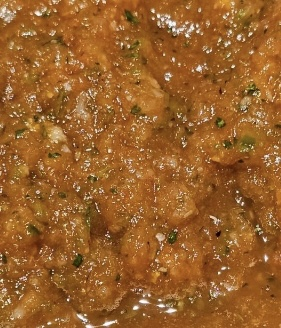

Home
Salsa Fresca

A classic garden salsa that makes you yearn for simpler times.
Ingredients
- Fresh Roma Tomatoes
- Serrano Peppers
- Garlic
- Cilantro
- White Onion
Steps
- Chop cilantro (include stems).
- Cut other ingredients into small enough pieces for a food processor.
- Pulse all ingredients together in food processor until it arrives at the consistency you desire.
- Serve up smiles!